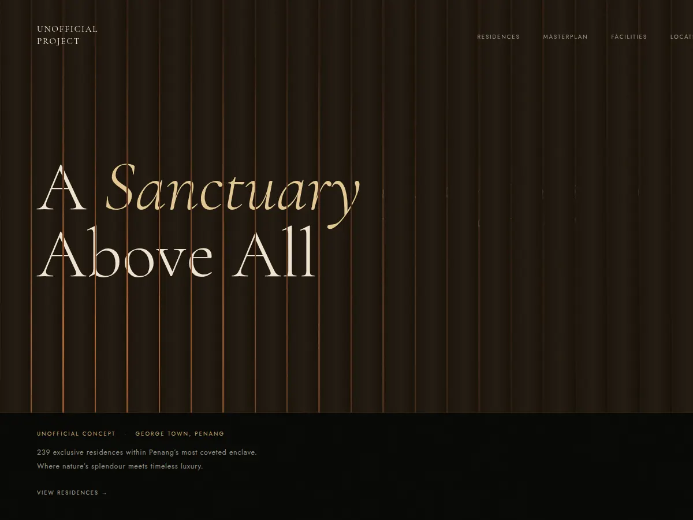
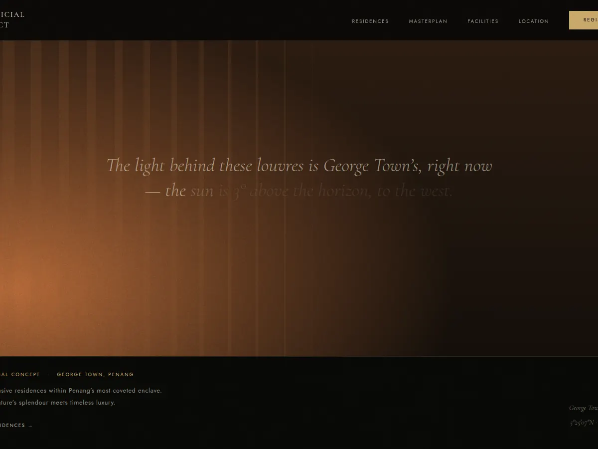
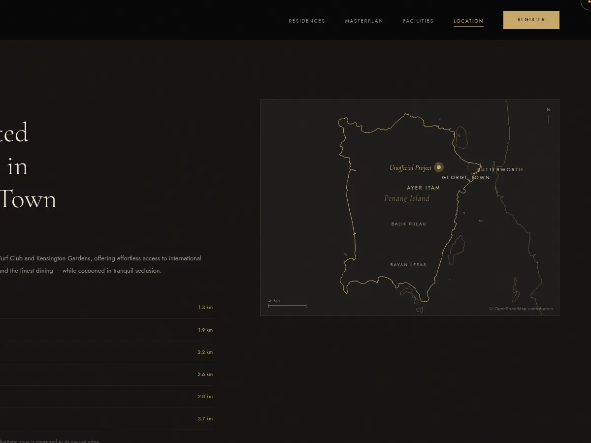
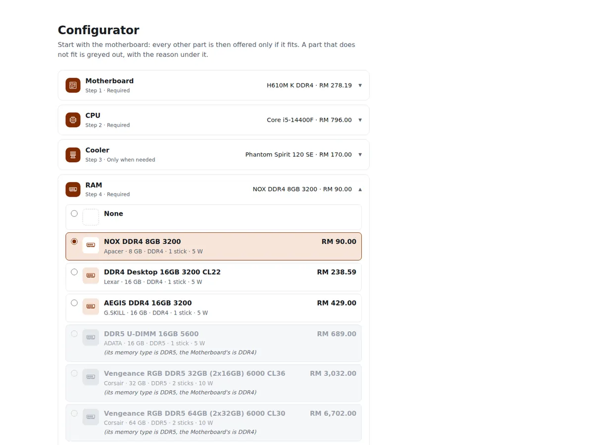
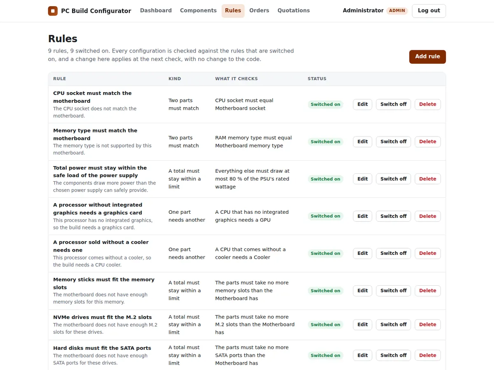

[01]
Unofficial Project
Unofficial concept · Self-initiated · 2026
A house I didn’t design. A site I did. Then I measured it.
George Town, Penang · 5°25′N 100°19′E
Brandon Liong Jia Chen
Interactive Development · Available Jan 2027
Where I stand
I build it. Then I measure it.
The second part is the job.
Nothing on this page is estimated.
Evidence
Sheet 1 of 1 · Exploded view
Unofficial concept · Self-initiated · 2026
A concept website for a real residential development in George Town. Not commissioned, no client, not affiliated with the developer — I picked the subject to take one site from design to something I could measure.
Premise
I built the first version with an AI assistant. The part worth showing is what came after: I took it apart, measured it, and fixed what the numbers said was broken.
The part I drew by hand is the masterplan: about 800 lines and 33 interactive zones in Figma, roughly five hours.
The light is George Town's, right now
The title is printed across a wall of timber louvres. The light in the gaps follows the real sun over George Town at the moment you visit — its colour from the sun's height, its direction from where it stands. Scrolling holds the screen for one viewport while the louvres open and the line behind them lights up word by word, so it gets read before the page moves on.

The sun position comes from a short formula I checked against a separate NOAA method: across 2,424 random moments the altitude differs by 0.57° at most. The old hero was a full-screen shader that never stopped; this one is CSS 3D and costs 0.09 ms of JavaScript per frame while scrolling, nothing while still.
A map from open data
The location section starts close on the site and pulls back to the whole island. The coastline and place names come from OpenStreetMap through a small Python export, and the distances in the list are straight-line kilometres computed from coordinates — not drive times, because Penang traffic makes minutes a guess.

A bug worth writing down
Clicking Facilities in the menu landed on the masterplan instead — every time it was
clicked from above that section, 6 of 10 jumps. The jump itself was right;
a second later the page was pulled back. The masterplan called
scrollIntoView() on its list each time an item lit up, to keep the list in view.
But that list cannot scroll, so scrollIntoView() scrolled the next thing up
that could: the whole page. Removing that one line made it 10 of 10.
What I measured
Still open
Asset & naming note
This is an unofficial concept for a real development. It is not affiliated with or endorsed by the developer. The building renders on the live site are the developer's artist's impressions from their public brochure. The images on this page are screenshots of my own work. Map data © OpenStreetMap contributors.
Course project · Built solo with AI · 2026
A web system for a shop that sells custom-built desktop PCs. Customers put a machine together from the shop's parts, and the system checks as they go that the parts work together — then holds those parts in stock until the shop approves the order.
Premise
A course project, built on my own with an AI assistant. PHP and MySQL with plain HTML, CSS and JavaScript — no framework — about 8,800 lines across eight database tables.
Checked as you build
The motherboard is chosen first. From then on, every part that would not fit is greyed out with the reason under it — "its socket is AM5, the motherboard's is LGA1700". Price and power add up as you go, and the power supply only counts as enough when everything else draws at most 80% of its rating. Ordering stays switched off until the configuration passes, and the server checks everything again when it is saved.

Rules are data, not code
Compatibility rules come in three kinds: two parts must match, a total must stay within a limit, or one part needs another. The system ships with nine. Another rule of an existing kind is a new row in the database, added from the admin pages — no code change.

Stock that cannot go negative
Ordering a configuration reserves its parts. The shop then approves the order, and the parts leave stock, or rejects it with a remark, and they go back. Stock changes run inside database transactions that lock the rows they touch, so two orders for the last unit cannot both succeed.